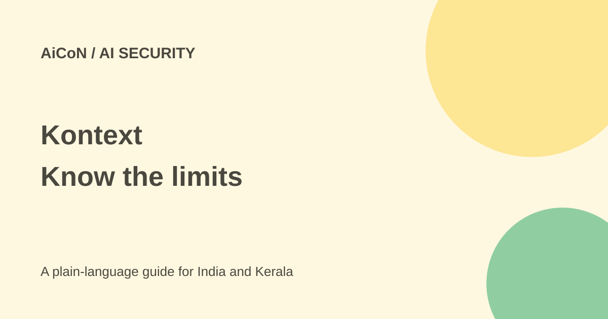

Kontext: free tier, agent policies and enforcement limits
Kontext checks supported agent tool calls against workplace rules. It can block calls at a supported control point, but it is not a universal kill switch.

What does Kontext do?
Kontext helps teams discover agents, record tool calls, apply policies and review risk and cost. A tool call is an action such as running a shell command. A policy is a rule that decides whether an action is allowed.
Its docs cover Claude Code and Codex hooks. Endpoint-based Cowork uses Claude Code hooks. Cloud-hosted Cowork cannot be observed by this endpoint setup. Blocking happens at the pre-tool-use hook, not every event or every possible agent.
Is it free?
The current site lists Free at $0 with 5,000 transactions a month. Team is $500 monthly with 100,000 transactions, then $1 per 1,000. Enterprise has custom pricing and unlimited transactions. At the approximate ₹96.43-per-dollar reference used in this archive, Team is about ₹48,215 monthly and overage about ₹96 per 1,000. These are estimates, not INR checkout prices; taxes and conversion can differ.
Ask how transactions are counted, what happens at the limit and which features your workspace includes. Workplace use needs organisational permission and data review, including for teams in India.
How to start safely
- Use an authorised workspace. The quickstart requires an owner or admin, macOS, Homebrew and Claude Code or Codex.
- Follow the dashboard's Get started steps and documented Homebrew installation.
- Keep the setup key private. The docs suggest interactive setup to avoid placing it in shell history.
- In Codex, review and trust the Kontext hooks. Until then, Codex sends no events.
- Run the official read-only test and
kontext doctor. Confirm the trace in Explore. - Test a policy in Observe before considering Enforce.
Observe does not block
Observe lets calls run even when a policy would deny them. Enforce stops a Deny at the supported hook. Risk assessment is separate: a later risk finding is not evidence that the action was stopped.
The docs state an important failure limit. If policy evaluation fails, a call can run even in Enforce unless another request in the same compound command returned Deny. By contrast, an unreachable daemon or no usable policy leads the enforcing hook to deny calls. Test these cases before relying on it for destructive commands.
What data leaves the endpoint?
Policy checks happen locally, but records go to the workspace. Hosted AI assessment can receive redacted tool-call data and nearby context for flagged calls. Even Omitted payload capture still sends redacted summaries and certain flagged context. Secret redaction does not remove every confidential business detail. Review capture settings with your security team.
What changed since the original AiCoN post?
The old post said there was no public pricing and described a broad kill switch. Current pricing includes Free and Team. This guide also narrows the coverage claim: supported hooks matter, cloud Cowork is outside endpoint coverage and some evaluation failures permit a call to run.
Frequently asked questions
Does Observe prevent damage?
No. It records what a policy would do while allowing the call.
Are all agents covered?
No. Verify the agent, runtime and hooks against the docs.
Does local evaluation mean fully offline privacy?
No. Records and some assessment context leave the endpoint.
Who is it for?
Developers and teams able to test policies and manage permissions. It does not replace backups, access limits or code review.
Sources: Product and pricing · Quickstart · Supported agents · Decisions and failures · Data collection · Privacy. Checked 7 October 2026.